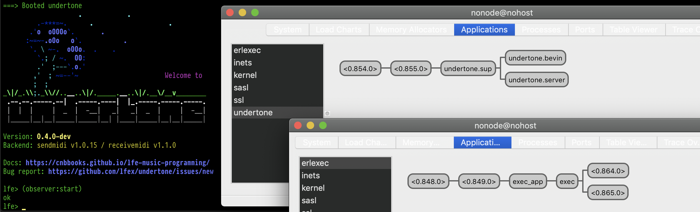
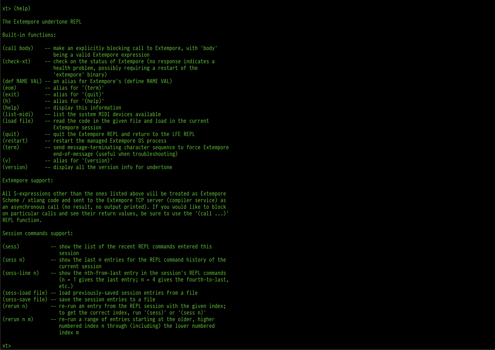
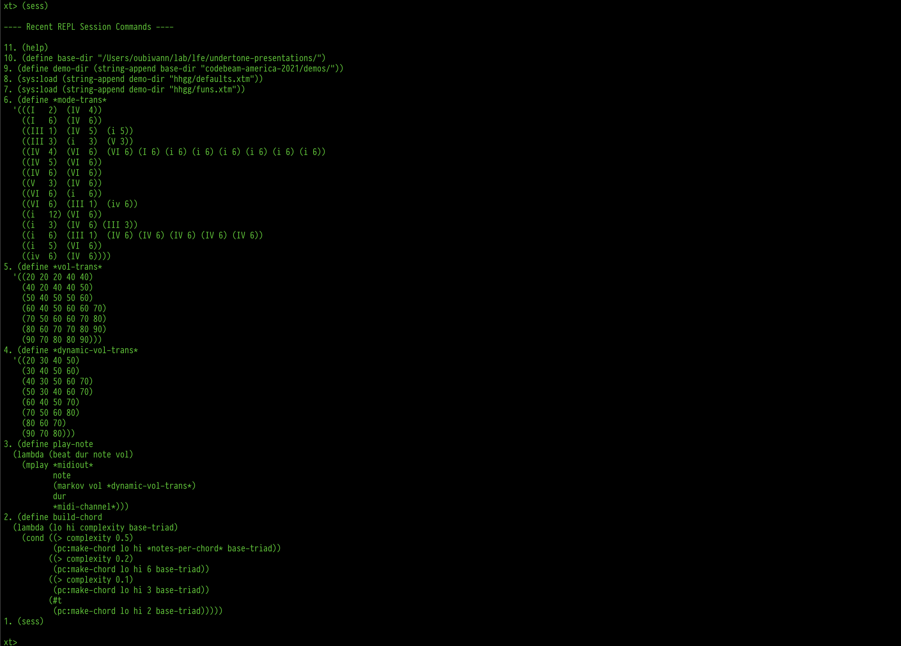

Sound on BEAM: Music in the Land of Distributed Lisp
( Part II )
Overview
- Introduction
- undertone and Its Use Cases
- Architecture
- Supervision Trees
- Clients and Servers
- External Processes, Ports, and
exec - Languages
- A Custom REPL
- Demo / Performance / Walkthrough
- What’s Next for undertone
- Q & A
Who am I?
- Prinicpal software engineer
- Life-long hacker (started at age 9 in ‘81; never stopped)
- Habbitual explorer
- Core contributor to Robert Virding’s Lisp Flavoured Erlang (LFE)
Who am I?
- 4 yo - Messing about with Piano
- 9 or 10 yo - Formal piano lessons, casual guitar
- 14 yo - First synthesizer (analog Korg PolySix)
- 16 yo - Performed in a chamber music group
- 25 yo - Stopped music; replaced with physics/maths … then career
- 42 yo - Began exploring generative music
- 48 yo - Started playing seriously again
Re-entering the Musical World

Re-entering the Musical World
Re-entering the Musical World

Wherefore undertone?
Wherefore undertone?
Wherefore undertone?

Wherefore undertone?

Wherefore undertone?

Wherefore undertone?
- Create music in my preferred language
- Monitoring and automatically restarting OS processes
- Speak to Open Sound Control servers (i.e., controlling faders on software consoles/mixers)
- Potentially host my own OSC servers
- Send TCP packages to the Extempore compiler service
- Automtically reconnect (with backoff support) to required services
- Be able to restart any of these components in the event of partial or complete system failure
Wherefore undertone?
- Create music in my preferred language
- Monitoring and automatically restarting OS processes
- Speak to Open Sound Control servers (i.e., controlling faders on software consoles/mixers)
- Potentially host my own OSC servers
- Send TCP packages to the Extempore compiler service
- Automtically reconnect (with backoff support) to required services
- Be able to restart any of these components in the event of partial or complete system failure
Wherefore undertone?
Also:
- Maintain multiple, separate state contexts
- Support a familiar workflow (a REPL!)
- Provide basic session management (ETS + a handful of functions)
What is undertone?

Architecture

Architecture
System context for Extempore:
- talks to the OS / routes MIDI
- signals routed to external devices
- also routed to MIDI in the DAW (e.g., software synthesizers)
Architecture
System context for undertone:
- uses Erlang (starts up supervision tree, clients, servers)
- talks to Extempore (bitstrings over TCP)
- controls OSC servers (e.g., DAWs)
Architecture
Architecture

Architecture
Architecture

Architecture

Architecture
Architecture
Architecture
The undertone “container”:
- OTP app with supervisor and state server
- State server for mananging session commands and system config
- OSC clients for any OSC-enabled software running a UDP server
- TCP client for long-running connections to Extempore
- LFE REPL
- Extempore REPL
Progress Check
- ✅ Introduction
- ✅ undertone and Its Use Cases
- ✅ Architecture
- Supervision Trees
- Clients and Servers
- External Processes, Ports, and exec
- A Custom REPL
- Demo / Performance / Walkthrough
- What’s Next for undertone
- Q & A
Supervision Trees
Supervision Trees

Supervision Trees

Supervision Trees

Clients and Servers
- Extempore client
- TCP client for sending messages to the compiler server
- Scheme syntax as bitstrings
- Started by the release
Clients and Servers
- Open Sound Control clients
- potentially many
- connecting to both software and hardware
- e.g., digital audio workstations (DAWs) to control console faders
Clients and Servers
- Open Sound Control servers
- none right now
- could create an OSC/MIDI bridge in LFE/Erlang
- create a custom Raspberry Pi sound device and export OSC methods
- erlsci/osc is UDP only
Clients and Servers
gen_serversfor state management- The Extempore REPL is a simple looping server
- The undertone backends each have their own
gen_serverthat’s responsible for managing the backend
External Processes & Erlang Ports
- Previously used
erlang:open_port(spawn_executable) - Switched to
execlibrary (which still uses Erlang ports) - Extempore backend:
- capturing output from Extempore
- “Bevin” backend:
- sending MIDI (OS process)
- receiving MIDI (separate OS process)
- stdout is captured for both and logged / parsed
External Processes & Erlang Ports
- Previously used
erlang:open_port(spawn_executable) - Switched to
execlibrary (which still uses Erlang ports) - Extempore backend:
- capturing output from Extempore
- “Bevin” backend:
- sending MIDI (OS process)
- receiving MIDI (separate OS process)
- stdout is captured for both and logged / parsed
External Processes & Erlang Ports
- Previously used
erlang:open_port(spawn_executable) - Switched to
execlibrary (which still uses Erlang ports) - Extempore backend:
- capturing output from Extempore
- “Bevin” backend:
- sending MIDI (OS process)
- receiving MIDI (separate OS process)
- stdout is captured for both and logged / parsed
External Processes & Erlang Ports
- Previously used
erlang:open_port(spawn_executable) - Switched to
execlibrary (which still uses Erlang ports) - Extempore backend:
- capturing output from Extempore
- “Bevin” backend:
- sending MIDI (OS process)
- receiving MIDI (separate OS process)
- stdout is captured for both and logged / parsed
Dependencies
- https://github.com/saleyn/erlexec
- Addresses issues with terminating OS processes
- Keeps to the spirit of Erlang’s clean Port API
- Used to manage 2 of 3 backends in undertone
Dependencies
- https://github.com/erlsci/osc
- Forked from https://github.com/marianoguerra/erlang-osc
- 5-10 year old code, updated per rebar3 project best practices
Dependencies
- https://github.com/lfex/tcp-client
- Originally used https://github.com/cabol/tcp_client
- Abandoned that effort in favour of an implementation based upon
gen_statemusing https://andrealeopardi.com/posts/connection-managers-with-gen_statem/ - Written in LFE
Dependencies
- https://github.com/ferd/backoff
- A readily available and easy to use exponential backoff library
Progress Check
- ✅ Introduction
- ✅ undertone and Its Use Cases
- ✅ Architecture
- ✅ Supervision Trees
- ✅ Clients and Servers
- ✅ External Processes, Ports, and exec
- Languages
- A Custom REPL
- Demo / Performance / Walkthrough
- What’s Next for undertone
- Q & A
Erlang & LFE
Basics: a recursive function using pattern-matching in the function heads.
Erlang
ackermann(0, N) ->
N+1;
ackermann(M, 0) ->
ackermann(M-1, 1);
ackermann(M, N) ->
ackermann(M-1, ackermann(M, N-1)).
LFE
(defun ackermann
((0 n) (+ n 1))
((m 0) (ackermann (- m 1) 1))
((m n) (ackermann (- m 1) (ackermann m (- n 1)))))
Erlang & LFE
OTP: Erlang supervisor
-module('undertone.sup').
-behaviour(supervisor).
-export([start_link/0]).
-export([init/1]).
start_link() ->
supervisor:start_link({local, ?MODULE}, ?MODULE, []).
init([]) ->
{ok, {sup_flags(),
[child('undertone.server', start_link, [])]}}.
sup_flags() ->
#{strategy => one_for_one,
intensity => 3,
period => 60}.
Erlang & LFE
OTP: LFE supervisor
(defmodule undertone.sup
(behaviour supervisor)
(export
(start_link 0)
(init 1)))
(defun start_link ()
(supervisor:start_link `#(local ,(MODULE)) (MODULE) '()))
(defun init (_args)
`#(ok #(,(sup-flags)
(,(child 'undertone.server 'start_link '())))))
(defun sup-flags ()
`#m(strategy one_for_one
intensity 3
Extempore
xtlang:
(bind-func AudioBuffer_data_b64
(lambda (ab:AudioBuffer*)
(let ((b64size:i64 0)
(datsize:i64 (* (AudioBuffer_frames ab)
(AudioBuffer_channels ab) 4)))
(String (base64_encode (cast (tref ab 4) i8*)
datsize
(ref b64size))))))
Extempore
Scheme:
(sys:load "libs/external/portmidi.xtm")
(pm_initialize)
(define *midi-out* (pm_create_output_stream 3))
(define midi-loop
(lambda (beat dur)
(mplay *midi-out*
(random (list 36 43 48 51 60 60 60 67 70 74 75))
(random 60 80)
dur 0)
(callback (*metro* (+ beat (* .5 dur)))
'midi-loop
(+ beat dur)
dur)))
(midi-loop (*metro* 'get-beat 4) 1/4)
A Custom REPL

A Custom REPL
A Custom REPL

A Custom REPL

A Custom REPL

Demo!
Demo!
Demo
Hi-res video of demo available here:
What’s Next for undertone?

Progress Check
- ✅ Introduction
- ✅ undertone and Its Use Cases
- ✅ Architecture
- ✅ Supervision Trees
- ✅ Clients and Servers
- ✅ External Processes, Ports, and exec
- ✅ Languages
- ✅ A Custom REPL
- ✅ Demo / Performance / Walkthrough
- ✅ What’s Next for undertone
- Q & A
Credits
Ent drawing by Talbot Jenkins.
Beginnig of first piece in demo adapted for Piano, based upon “Journey of the Sorcerer” by Bernie Leadon of The Eagles.